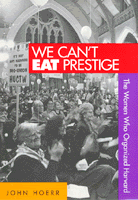

The story of a 15-year fight to form a union of office and lab workers at Harvard University
The story of a 15-year fight to form a union of office and lab workers at Harvard University


 The story of a 15-year fight to form a union of office and lab workers at Harvard University
The story of a 15-year fight to form a union of office and lab workers at Harvard University

|  |
We Can't Eat PrestigeThe Women Who Organized HarvardJohn Hoerrpaper EAN: 978-1-56639-925-8 (ISBN: 1-56639-925-4) |
"Hoerr’s book breaks new ground as it traces how the rising feminist consciousness of the 60’s and early 70’s fused with working-class, union sensibilities, and how...organizers made mainstream unions bend to accommodate this new mix."
—Ellen Clegg, The Boston Globe
This story explodes the popular belief that women white-collar workers tend to reject unionization and accept a passive role in the workplace. On the contrary, the women workers of Harvard University created a powerful and unique union--one that emphasizes their own values and priorities as working women and rejects unwanted aspects of traditional unionism.
The workers involved comprise Harvard's 3,600-member "support staff," which includes secretaries, library and laboratory assistants, dental hygienists, accounting clerks, and a myriad of other office workers who keep a great university functioning. Even at prestigious private universities like Harvard and Yale, these workers--mostly women--have had to put up with exploitive management policies that denied them respect and decent wages because they were women. But the women eventually rebelled, declaring that they could not live on "prestige" alone.
Encouraged by the women's movement of the early 1970's, a group of women workers (and a few men) began what would become a 15-year struggle to organize staff employees at Harvard. The women persisted in the face of patronizing and sexist attitudes of university administrators and leaders of their own national unions. Unconscionably long legal delays foiled their efforts. But they developed innovative organizing methods, which merged feminist values with demands for union representation and a means of influencing workplace decisions.
Out of adversity came an unorthodox form of unionism embodied in the Harvard Union of Clerical and Technical Workers (HUCTW). Its founding was marked by an absorbing human drama that pitted unknown workers, such as Kris Rondeau, a lab assistant who came to head the union, against famous educators such as Harvard President Derek Bok and a panoply of prestigious deans. Other characters caught up in the drama included Harvard's John T. Dunlop, the nation's foremost industrial relations scholar and former U.S. Secretary of Labor. The drama was played out in innumerable hearings before the National Labor Relations Board, in the streets of Cambridge, and on the walks of historic Harvard Yard, where union members marched and sang and employed new tactics like "ballooning," designed to communicate a message of joy and liberation rather than the traditional "hate-the-boss" hostility.
John Hoerr tells this story from the perspective of both Harvard administrators and union organizers. With unusual access to its meetings, leaders, and files, he examines the unique culture of a female-led union from the inside. Photographs add to the impact of this dramatic narrative.
Excerpt available at www.temple.edu/tempress
"Hoerr provides a comprehensive account of the history of the history of the Harvard office workers’ struggle to unionize at Harvard...instructive for labor educators, union organizers, and general readers who are interested in women’s role in the labor movement and union organizing in academia or in the female-dominated service industries."
—Labor Studies Journal
"Hoerr’s tale of staunch women and Harvard’s comeuppance make his book exciting reading."
—Jean Alonso, The Women’s Review of Books
"[We Can’t Eat Prestige] is a superb piece of investigative journalism...The book is readable and the story compelling...it provides a richly detailed account of an important episode in late 20th-century women’s labor history."
—Ruth Milkman, Labor History
"This is a valuable book, especially for those interested in the internal operation of unions."
—Richard W. Hurd, Industrial and Labor Relations Review
"Describes in illuminating detail the motives and aspirations of one group’s effort to gain a voice in their workplace."
—Choice
"This is a superb piece of investigative journalism, based on extensive research, including interviews with many of the key participants on both the union and management sides, as well as a wide variety of written documents. The book is readable and the story compelling. ...it provides a richly detailed account of an important episode in late 20th-century women's labor history. "
—Labor History
John Hoerr, a freelance writer, has been a journalist for more than thirty years at newspapers, magazines, public television, and United Press International. A specialist in labor reportage, he is the author of And the Wolf Finally Came: The Decline of the American Steel Industry.
Labor Studies and Work
Women's Studies
Education
Labor and Social Change, edited by Paula Rayman and Carmen Sirianni.
Labor and Social Change, edited by Paula Rayman and Carmen Sirianni, includes books on workplace issues like worker participation, quality of work life, shorter hours, technological change, and productivity, as well as union and community organizing and ethnographies of particular occupations.
© 2015 Temple University. All Rights Reserved. This page: http://www.temple.edu/tempress/titles/1143_reg.html.